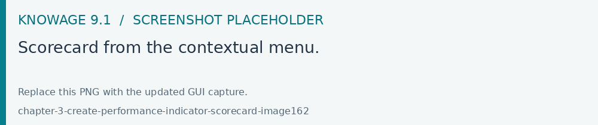
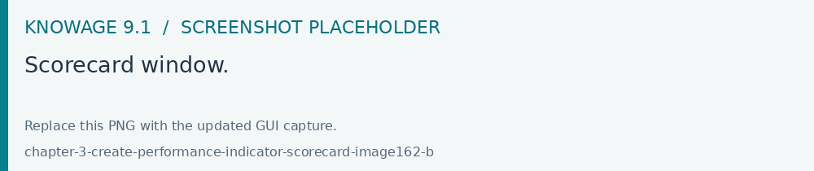
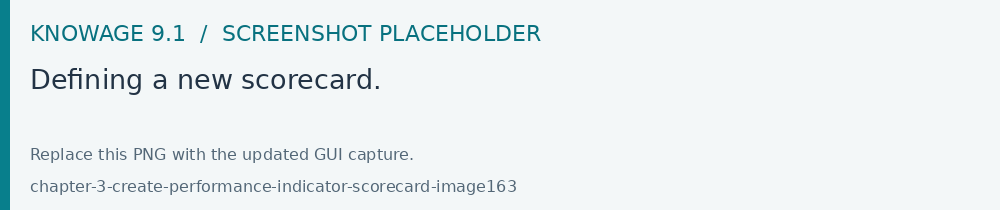
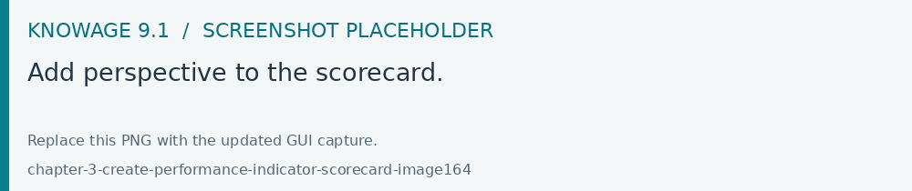
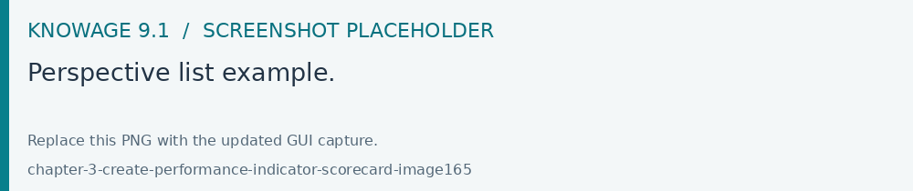
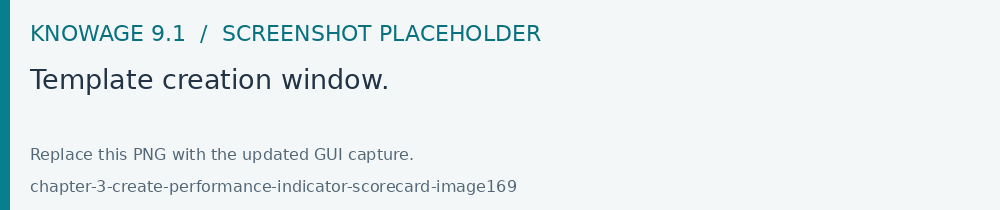
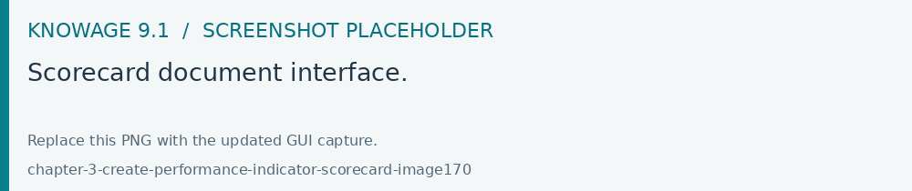

Creating a Scorecard
Open Modules > KPI Model > Scorecards to group and present KPI results. Start from validated KPI definitions, set the scorecard hierarchy and check the resulting status before publishing it.
The Scorecard feature, available in Knowage suite as highlighted in the following figure, allows to supervise different KPIs at the same time. This option gives an exclusive complete overview of the KPIs situation when the user is not interested in a single threshold check. This tool is in fact useful when the user is interested in monitoring the overcoming of two or more critical KPI values.

Fig. 577 Scorecard from the contextual menu.
Scorecard development
A scorecard is structured in hierarchical levels. Shortly speaking, there is a first level called Perspectives composed of KPIs grouped on targets. Otherwise, Targets are assigned a threshold depending on the KPIs they are composed of. In the following we will describe in detail a scorecard configuration. When clicking on the Scorecard menu item the window of figure below opens. Here the implemented scorecards are listed and can be opened and edited.

Fig. 578 Scorecard window.
The Plus icon available at the right top corner of the page opens a new window where to set a new scorecard, as shown below. Assign a name and click on Add perspective (Figure below).

Fig. 579 Defining a new scorecard.
A perspective allows you to organise the monitoring over targets.

Fig. 580 Add perspective to the scorecard.
An example is given in the following figure.

Fig. 581 Perspective list example.
Each perspective manages one or more targets accordingly to the user’s requirements. A target consists of one or more KPIs and it is assigned a threshold color according to the chosen Evaluation criterion. The available evaluation criterion are:
Policy “Majority” (M), the target gets the threshold of the KPI threshold that numerically exceeds the others,
Policy “Majority with Priority (MP)”, the target gets the threshold of a specific KPI,
Policy “Priority” (P), the target gets the majority threshold of the KPIs in case the primary stated KPI returns the lower threshold, namely the “green” one, while it gets the threshold of a primary stated KPI in case the latter returns the other thresholds, namely the “yellow” or the “red” one.
Warning
Thresholds of selected KPIs must have the right colors
Note that the scorecard shows the right colors accordingly with the selected policy only if the KPIs which compose the targets have no filters and standard colors (see the Create KPI section for definitions) to highlight the threshold.
Warning
“Standard” colors for thresholds
When the targets contain parametric KPIs the target/perspective evaluation cannot be completed for value absence. Therefore the warning lights turn grey. The right visualization of the scorecard must be implemented through a scorecard document. Check the following to have more details on how to develop a scorecard document.
The same choice is available at the perspective level that is:
Policy “Majority” the perspective gets the threshold of the target threshold that numerically exceeds the others,
Policy “Majority with Priority” the perspective gets the threshold of a specific target,
Policy “Priority” the perspective gets the majority threshold of the targets in case the primary stated target returns the lower threshold, namely the “green” one, while it gets the threshold of a primary stated target in case the latter returns the other thresholds, namely the “yellow” or the “red” one.
Plese remember always to save scorecards after all the related details are being set up.
Creation of a Scorecard document
After saving your scorecard it is possible to develop a scorecard document which can be easily run by (authorized) end users. To create a scorecard document just follow the same steps as for the KPI document.
This time by clicking the Open Designer section you need select the Scorecard option as shown below. Choose an existing scorecard from the list opened by clicking the Add Scorecard Assiociation and save.

Fig. 582 Template creation window.
Figure below gives an example of a scorecard document interface. The arrows point out the perspectives’ achievement of the goals or, on the contrary, the missing of the targets. As well the achievement/failure of the single targets is pinpointed by the arrow signals close to each target.

Fig. 583 Scorecard document interface.
Note that it is possible to check the policy used for each perspective. In fact, by clicking on one of them a wizard opens showing the policy adopted and the goal got by ach KPI.